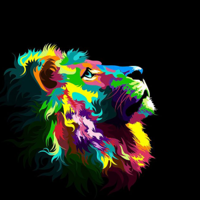
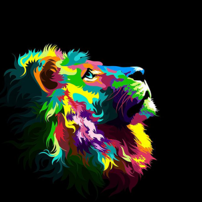
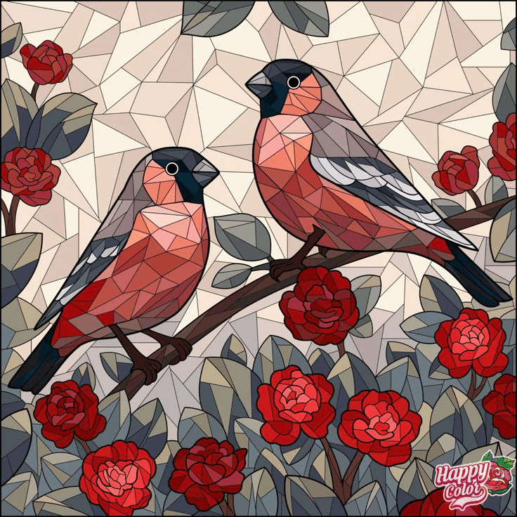
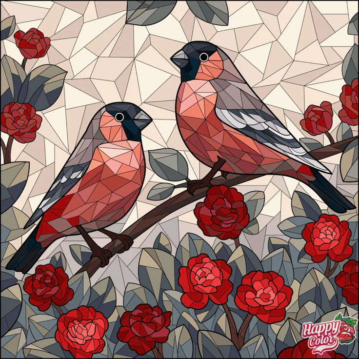

Situação que me inspirou a escrever o blog
Certa vez, eu queria pintar ilustrações na parede de um muro, no entanto, eu não sabia pintar no estilo realista, ou seja, fazer os degradês suaves das cores, que é o modo como enxergamos o efeito das sombras nos objetos (na verdade, nem mesmo em telas eu aprendi a fazer isso). Então eu fui pesquisar métodos alternativos de preencher os desenhos, os quais estão apresentados nesse blog.
1. Sombras simplificadas (com ou sem contornos)
Essa é uma simplificação do sombreamento realista. O formato que a sombra faz no objeto é desenhado. E a quantidade tons é reduzida. Você sabe que desenhos animados são pintados desse modo.


Relativo ao 3D
Esse estilo de pintura, em sombras simplificadas, é usado em bonecos 3d (digitais ou reais).
Pelagem de animais feitas nesse estilo
expand_all collapse_allCada mecha tem uma cor solida diferente da mecha ao lado. É trabalho um de ilustração manual, manual e bonito. Esse estilo é melhor para animais de pelo alto.

 


Folhas como penas ou pelos
expand_all collapse_allO artista Sergey Kovalenko pensou em usar folhas para representar pelagem.


2. Polígonos
Os formatos das sombras é convertido em poligonos coloridos.


Relativo ao 3D
É uma tendencia entre artistas 3D modelar com polígonos. Modelos assim podem ser projetados em pepel. Depois de cada parte ser dobrada e colada, tem-se de volta o modelo 3D — nisso consiste o papercraft ("arte em papel").


3. Triangulos juntos


3.1. Mosaico de triângulos
Pesquisando por "mosaic illustration", encontramos ilustrações como essas, mas mosaicos reais não tendem a ser feitos somente com triangulos.

 


4. Mosaico com formas retangulares


4.1 Mosaico de formas curvas

5. Formas curvas juntas (insiparadas nas anteriores)


4.Círculos
Sei que você conhece o pontilhismo, mas esse estilo é um pouco diferente.


Thomas Pavitte
Thomas Pavitte inventou esse estilo de desenho com formas que seguem as curvas de vários círculos sobrepostos.


Trias Ysa


Linhas


Então, voçê já conhecia alguma dessas formas de fazer ilustrações? O que achou dessa seleção?